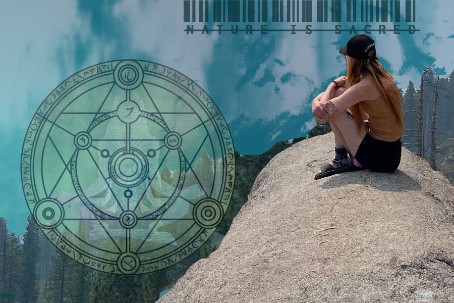

pixels vector print animation home contact me
For my Raster project, I used a photo that a friend took on our trip to Yosemite. It was my first time to Yosemite and it was a surreal/eye-opening experience. The entire trip there was a smoky haze in the air due to the Sierra Nevada fires. This experience inspired me to use the photo for my project to reflect how sacred nature is and the reality that we are not treating it as such. I look forward to practicing more with each tool so I can improve my photoshop skills